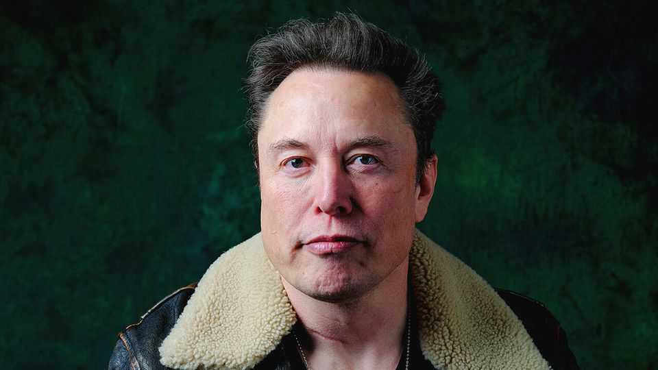

“Musk” reminds you how much you already know about Elon
It is hard to make a fresh documentary on a ubiquitous subject, Alex Gibney’s gruelling film shows

Oct 15th 2026
You may not be a fan of Elon Musk. Perhaps you’re not even very interested in him. But if you watch “Musk”, a gruelling new documentary, you will realise that, osmotically, you have come to know a lot about the sometime trillionaire. This is a compliment to his influence and ubiquity. It is less positive news for the documentary itself, even for the whole documentary genre.
In “Musk”—out now in American cinemas and screened at the BFI London Film Festival—Alex Gibney, an Oscar-winning director, sets out to discover how Mr Musk has “assumed so much power, and why had we given it to him?” Using interviews with former colleagues and partners (business and romantic), the first half of the film chronicles Mr Musk’s breakneck rise, from PayPal to Tesla’s electric vehicles, the satellites of Starlink and reusable rockets of SpaceX.
After a ten-minute interval, the second half covers his plunge into politics and AI. Mr Gibney shows how pandemic rules and the gender transition of one of his many children nudged Mr Musk rightwards. Posing as a “free-speech absolutist”, he buys Twitter and tries to run it like Tesla. Then, after Donald Trump installs him at DOGE, he tries to do the same with the federal government. Maybe one day the brain chips that are among his side hustles will let people download this saga in an instant. For now, it lasts almost four hours.
In a parade of talking heads, the missing face is Mr Musk’s. He declined to be interviewed and called Mr Gibney a “douche” and “crackpot”. The director’s solution is to create a somewhat flattering digital avatar which mouths things Mr Musk has said in public. This is fitting, reasons Mr Gibney, since Mr Musk has questioned whether what seems to be real life is actually a simulation run by future beings. (Popular among pretentious adolescents, the notion that you may only think you’re here was zapped by René Descartes nearly 400 years ago.)
Viewers may instead conclude that they’ve been living inside a giant documentary about Elon Musk—since so much of this one feels so familiar. As the deepfake Musk-bot attests, there is an awful lot of him on the record already. Here he is mucking about with a chainsaw and Argentina’s president. Here he is in the White House with his young son, X.
What feels fresh? Mr Gibney speculates about the possible abuse of data harvested by Mr Musk’s pimply underlings at DOGE. You may be shaken (if not surprised) by reflections from some of his offspring’s mothers. “If you were my employee,” he reportedly told Justine Musk, his first wife, “I would fire you.” After he let her go, one of the women he took up with was Ashley St Clair, a former MAGA influencer, who says: “Elon is a nuke.”
The film revisits Mr Musk’s unhappy childhood in South Africa, where he was bullied at school and belittled by his sinister father, Errol, who pops up on camera to rationalise his abrasive parenting style. Observers may wonder how a person as rich and powerful as Mr Musk can be so thin-skinned and needy that he frets over the traction gained by his tweets. The explanation, “Musk” suggests, lies in a kind of arrested development and a yen for affirmation.
Beyond its bloat and paucity of revelations, the problem with “Musk” is that it wavers between two damning—but different—analyses. One is that Mr Musk is an uncompromising fanatic who takes reckless risks in pursuit of his goals, whether autonomous cars or humanity’s glorious “multiplanetary” future. On this reading, his story’s underlying theme is the cost and virtue of doubt: how a lack of it can fuel stellar success but also be a dangerous flaw.
The other, contradictory critique is that Mr Musk is a grifter, who takes credit for things he didn’t do or that may never happen (like colonising Mars). Accordingly, his main talents are self-promotion and securing government contracts and credits; he hitched his rocket to Mr Trump’s wagon out of venal self-interest and fear of regulatory trouble. In which case, the lesson is that his acolytes and investors are chumps.
The ultimate moral of this documentary may be less about him than about documentaries. In the over-exposed age of social media and rolling news, it is hard to make a revelatory one on a marquee subject. As for Mr Musk: audiences will blink out of the cinema, wishing his robot project had produced AI usherettes to deliver ice-creams to their seats—and hoping not to hear about him for a while. In that they are, once again, liable to be disappointed. ■